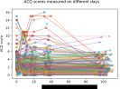

Table 1. Spearman's correlation coefficient between the demographic and medical history features provided in the dataset and ΔACQ, the change in ACQ scores between the first administration of the questionnaire and the average of the subsequent four administrations of the questionnaire. N corresponds to the number of rows where the given feature is not null.
| Feature name | Spearman's ρ | p-value | N |
|---|---|---|---|
| gender | -0.3964 | 0.0678 | 22.0000 |
| retire | -0.1995 | 0.0930 | 72.0000 |
| arthritis | 0.1514 | 0.1214 | 106.0000 |
| vaccine | -0.1507 | 0.1230 | 106.0000 |
| CVD | 0.1419 | 0.1469 | 106.0000 |
| age | -0.1186 | 0.1582 | 143.0000 |
| sex | -0.1190 | 0.1935 | 121.0000 |
| smoking | -0.1234 | 0.2077 | 106.0000 |
| allergy | 0.1093 | 0.2648 | 106.0000 |
| polyps | -0.1040 | 0.2885 | 106.0000 |
| eos300 | 0.0901 | 0.2969 | 136.0000 |
| Prev-biologic | 0.0944 | 0.3359 | 106.0000 |
| race | -0.0390 | 0.6436 | 143.0000 |
| co-yellowfever | -0.0366 | 0.6644 | 1.0000 |
| co-heartfailure | 0.0977 | 0.6818 | 20.0000 |
| co-asthma | -0.0827 | 0.7289 | 20.0000 |
| co-pneumonia | 0.0766 | 0.7413 | 21.0000 |
| co-diabetes | 0.0727 | 0.7541 | 21.0000 |
| co-copd | 0.0966 | 0.7653 | 12.0000 |
| disab | 0.0251 | 0.7664 | 143.0000 |
| work | -0.0141 | 0.8676 | 143.0000 |
| weight | 0.0162 | 0.8691 | 106.0000 |
| bmi | -0.0147 | 0.8813 | 106.0000 |
| height | 0.0129 | 0.8959 | 106.0000 |
| co-arthritis | -0.0101 | 0.9043 | 5.0000 |
| demographics_table | 0.0009 | 0.9911 | 143.0000 |
| medhistory_table | 0.0009 | 0.9911 | 143.0000 |
Table 1. Spearman's correlation coefficient between the demographic and medical history features provided in the dataset and ΔACQ-lt1, a boolean value which is true if the ACQ scores decreased by more than one point between the first administration of the questionnaire and the average of the subsequent four administrations of the questionnaire. N corresponds to the number of rows where the given feature is not null.
| Feature name | Spearman's ρ | p-value | N |
|---|---|---|---|
| age | 0.2017 | 0.0157 | 143.0000 |
| retire | 0.2663 | 0.0238 | 72.0000 |
| sex | 0.1554 | 0.0887 | 121.0000 |
| co-diabetes | -0.3464 | 0.1240 | 21.0000 |
| race | 0.1172 | 0.1632 | 143.0000 |
| gender | 0.2844 | 0.1996 | 22.0000 |
| CVD | -0.1242 | 0.2047 | 106.0000 |
| co-pneumonia | -0.2066 | 0.3689 | 21.0000 |
| co-yellowfever | 0.0734 | 0.3835 | 1.0000 |
| arthritis | -0.0702 | 0.4746 | 106.0000 |
| allergy | -0.0691 | 0.4818 | 106.0000 |
| disab | -0.0576 | 0.4945 | 143.0000 |
| Prev-biologic | -0.0655 | 0.5049 | 106.0000 |
| vaccine | 0.0649 | 0.5086 | 106.0000 |
| work | 0.0503 | 0.5506 | 143.0000 |
| co-asthma | 0.1307 | 0.5828 | 20.0000 |
| co-heartfailure | -0.1307 | 0.5828 | 20.0000 |
| eos300 | -0.0468 | 0.5885 | 136.0000 |
| co-copd | 0.1690 | 0.5995 | 12.0000 |
| smoking | 0.0377 | 0.7013 | 106.0000 |
| medhistory_table | 0.0181 | 0.8306 | 143.0000 |
| demographics_table | 0.0181 | 0.8306 | 143.0000 |
| weight | -0.0203 | 0.8366 | 106.0000 |
| height | -0.0169 | 0.8638 | 106.0000 |
| co-arthritis | 0.0129 | 0.8785 | 5.0000 |
| bmi | 0.0065 | 0.9469 | 106.0000 |
| polyps | 0.0032 | 0.9744 | 106.0000 |
Table 2. LightGBM parameters which were evaluated using grid-search. The accuracy of each trained classifier was evaluated using 10-fold cross-validation, and the parameters that produced a classifier with the highest cross-validation accuracy are provided in the "Final value" column.
| Parameter name | Values attempted | Final value |
|---|---|---|
| boosting_type | ["gbdt"] |
"gbdt" |
| learning_rate | [0.001, 0.005, 0.01, 0.05, 0.1, 0.2] |
0.1 |
| num_leaves | [2, 4, 6, 8, 12, 16, 24, 32] |
6 |
| num_iterations | [5, 10, 20, 50, 100, 200] |
5 |
| min_sum_hessian_in_leaf | [0] |
0 |
| min_data_in_leaf | [1, 5, 10, 20] |
10 |
| max_bin | [15, 31, 63, 123, 255] |
31 |
A
B


A

B

C

D

E

F